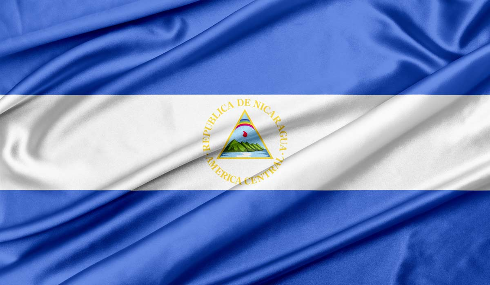
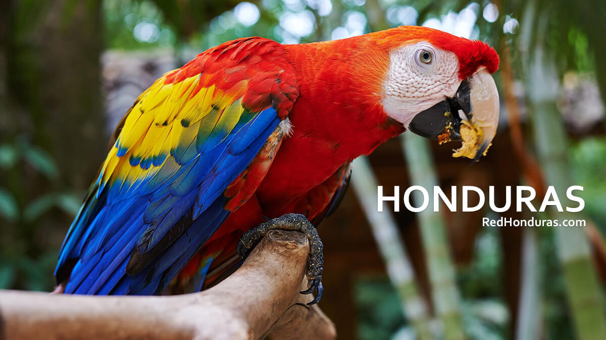
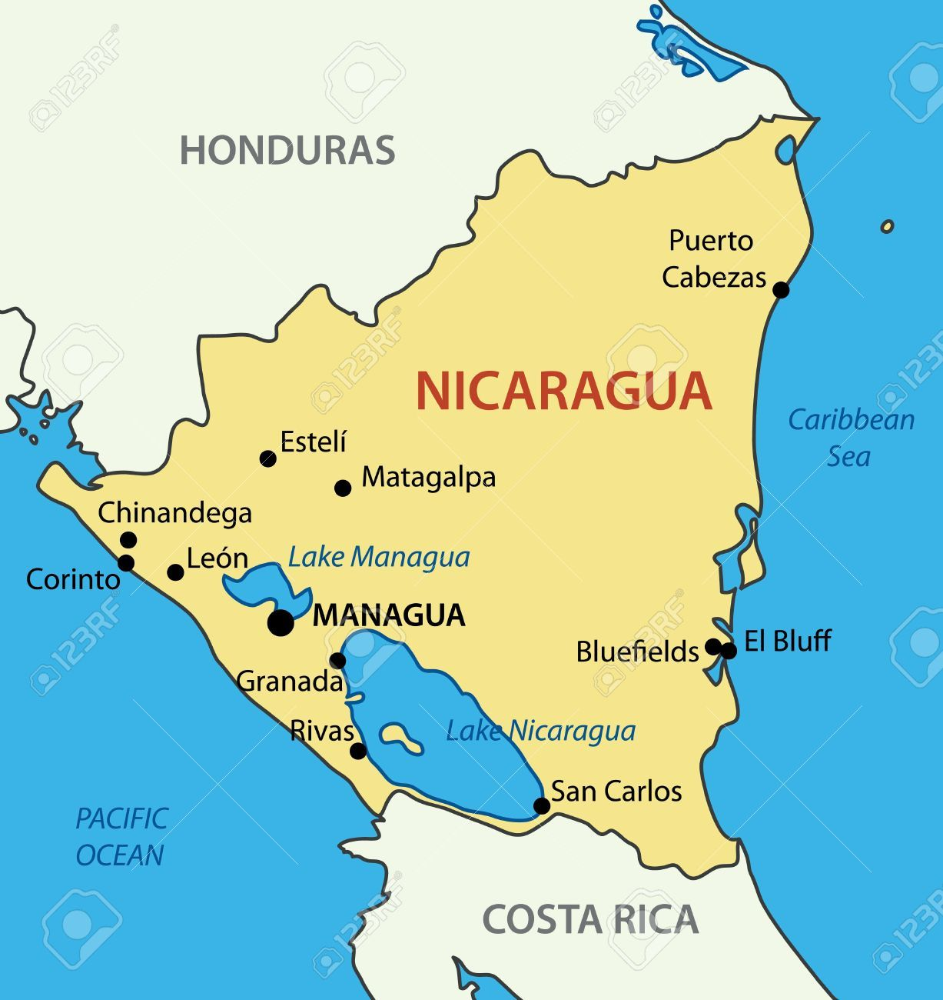
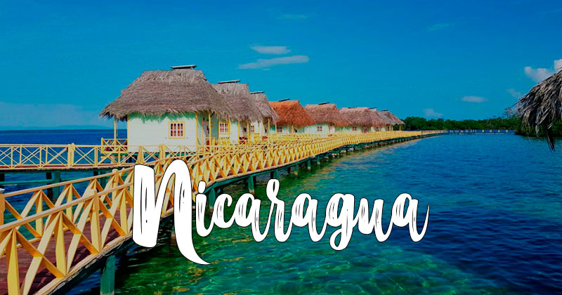

Simbolos patrios

Bandera
La Bandera Nicaragüense tiene tres franjas horizontales (dos azules, arriba y abajo) con el escudo nacional en el centro, en la franja blanca. La franja blanca del Pabellón Nacional representa el territorio de la nación y simboliza la pureza de Nicaragua.
Las dos franjas azules significan que Nicaragua está bañado por dos océanos.
El escudo nacional es un triángulo rodeado circularmente con las palabras REPÚBLICA DE NICARAGUA arriba y AMÉRICA CENTRAL abajo.

Escudo
El escudo nacional es un triángulo rodeado circularmente con las palabras REPÚBLICA DE NICARAGUA arriba y AMÉRICA CENTRAL abajo.

Flor nacional
Esta colorida flor llamada Sacuanjoche, es la Flor Nacional de Nicaragua. La Sacuanjoche crece en los árboles Plumerian Alba o Frangipani, un tipo de árbol muy angosto que florece en Mayo. El nombre local es Sacuanjoche de origen Náhuatl.

Árbol nacional
El madroño es el Árbol Nacional de Nicaragua desde 1971. En La Gaceta, Diario Oficial de la República de Nicaragua, número 194, aparece reproducido el Decreto Legislativo No. 1891 por el cual se declara al madroño Árbol Nacional de Nicaragua.

Animal nacional
El pájaro nacional es el Guardabarranco. Esta colorida ave es fácilmente reconocida por su larga cola rematada por dos plumas azul. Los Guardabarranco comen principalmente insectos y cavan un hoyo en la tierra para poner sus huevos.
Pueden ser vistos en los bosques de Nicaragua, generalmente en el suroeste. Sus habitats no están limitados por los limites departamentales, ya que puede ser visto hasta en la capital, Managua.
Historia
La historia de Nicaragua recorre el período temporal desde la llegada de los primeros ibéricos a tierras americanas hasta la actualidad.
Los colonos españoles conducidos por Gil González Dávila penetraron en Nicaragua hacia el año 1520 y el país fue agregado a la Capitanía General de Guatemala. La dominación española permaneció limitada a la costa del océano Pacífico y las áreas inmediatas.

Extención territorial
130.373 km²

Lugares turisticos de Nicaragua
- León
- Managua
- San Juan del Sur
- Lago Cocibolpa
- Matagalpa
Lista de departamentos